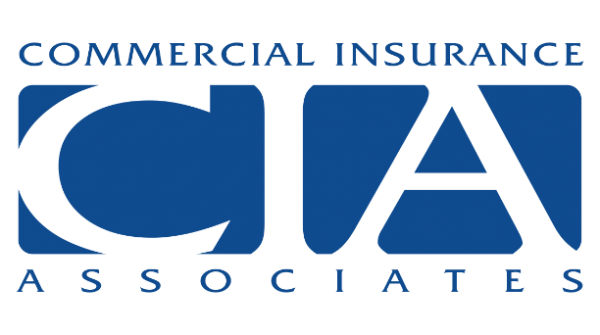

Built for the courtroom
Subject-matter expert witness services are the core of GIC's practice — accepted in state and federal jurisdictions.
Deep insurance expertise. Objective analysis. Reports and testimony that stand up in court.
On every assignment, GIC uses decades of in-depth insurance industry experience to deliver the results your project deserves — by digging deeper and out-working, out-producing, and out-shining other experts in the field.
Subject-matter expert witness services are the core of GIC's practice — accepted in state and federal jurisdictions.
Credentials accepted in state and federal jurisdictions. Thorough, well-cited reports — and testimony delivered with conviction at deposition and trial.
Learn more →Claim reserve studies, claims adjudication projects and reinsurance cession allocation, built on careers at three of the largest U.S. carriers.
Learn more →Hands-on, technical know-how for unprecedented claims — from international terrorism losses to complex restoration timelines.
Learn more →Market conduct examinations, mock exams, corrective action plans — from the team that has worked both sides of the regulator's desk.
Learn more →


Contact Rick Bingham and the GIC team to discuss your litigation, claims, or regulatory challenge.
info@glynloen.com (630) 940-5319